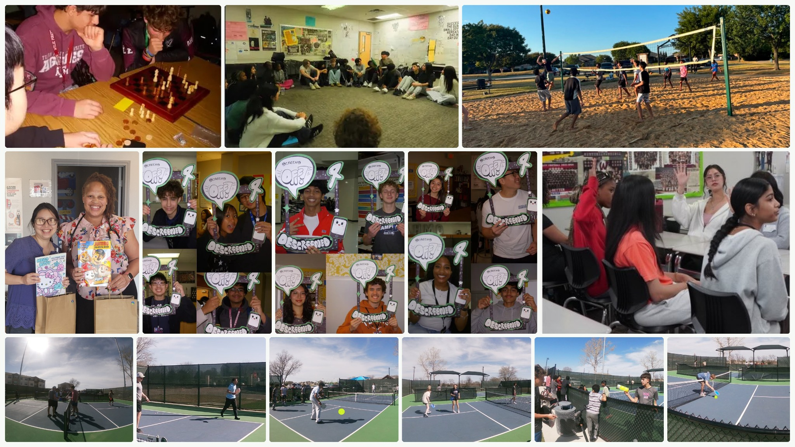

COMMUNITY / FILE 01
Descreened.
Ahmed Farooqui and I started Descreened in Wylie in 2025. The idea was simple: make more space for the things that happen when a phone is put down.

What the work looks like
Descreened talks with students about their screen habits and gives them reasons to meet in person. The team has organized workshops, sports days, volunteering, and other offline events. We are interested in balance, not asking people to give up technology.
Screen-free kits
In 2026, Descreened donated 40 activity kits through Health Services of North Texas for children visiting its Wylie clinic. The kits included coloring books, toys, and hands-on activities.
Writing together
Ahmed, Nathan Mathew, and I wrote about the project for North Texas e-News. That piece explains why we care about community spaces such as libraries, parks, and recreation centers.